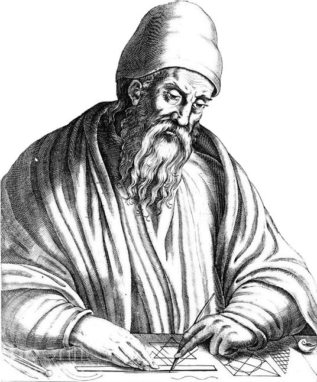

홈
소개
연구
연락처

유클리드
출생/사망: 기원전 300년 경 / 기원전 265년 경
유클리드는 고대 그리스의 수학자로, 기하학의 기초를 다진 인물입니다.
《기하학 원론》
유클리드 기하학
유클리드 알고리즘
업적의 영향
유클리드의 연구는 현대 수학의 기초를 다졌습니다.
흥미로운 사실
유클리드는 "기하학의 아버지"라고 불립니다.
그의 저서는 2000년 이상 사용되고 있습니다.
주요 저서 및 논문
《기하학 원론》
- 기하학의 기본 개념을 정리한 고전.
《데이터》
- 기하학적 문제 해결 도구.
관련 비디오
연대기
기원전 300년: 유클리드 출생
기원전 265년: 유클리드 사망
300년: 《기하학 원론》 출판
관련 문제 풀이
문제 1: 삼각형의 넓이 구하기 (난이도: 중)
문제 2: 두 점 사이의 거리 계산 (난이도: 쉬움)
추천 자료
서적:
"기하학의 역사" - 심층 분석
웹사이트:
"수학의 세계" - 수학 개념 자료